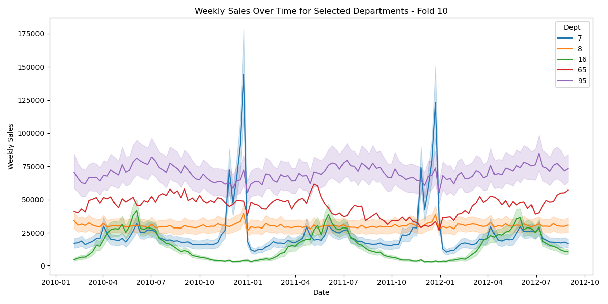
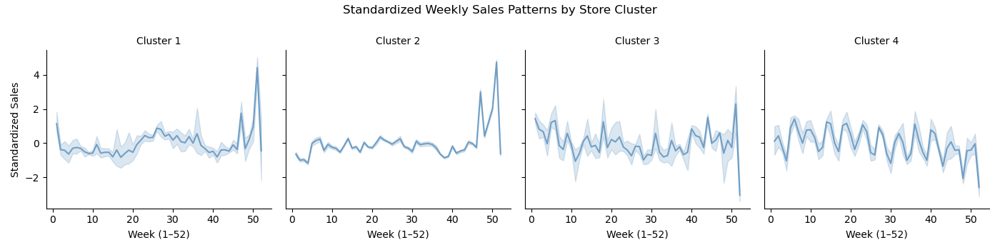
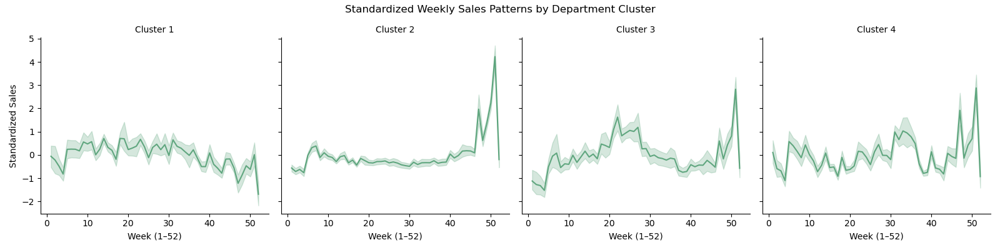

Retail Sales Forecasting Across 45 Stores
Developed a modular forecasting system to predict weekly department-level sales across 45 stores. The pipeline incorporates time-based regression, dimensionality reduction, and post-processing adjustments to model retail behavior with seasonality and promotional effects.
Dataset & Evaluation Metric
This project is based on the Walmart Store Sales Forecasting competition dataset. The data contains historical weekly sales from February 2010 to October 2012 for 45 stores across various departments, consisting of 10 time-based cross-validation folds. Each fold trained on a growing window of historical data and forecasted the subsequent two months. Each record includes the store ID, department number, date, weekly sales, and a binary flag indicating if the week includes a major holiday.
The primary success metric was Weighted Mean Absolute Error (WMAE), where four key holidays—Super Bowl, Labor Day, Thanksgiving, and Christmas—are weighted five times higher than regular weeks. This metric emphasizes the business-critical need for accurate holiday predictions.
Initial Data Exploration
I began by visualizing sales patterns across each department. The chart below highlights the diversity in department behavior. Some exhibit smooth seasonality, others spike sharply around holidays, and a few show erratic trends. These early insights motivated the need for both department-specific modeling and calendar-aware features.

Figure: Weekly Sales Over Time for Departments 7, 8, 16, 65, and 95
The Model Evolution: A Step-by-Step Journey
My approach was iterative. I started with the simplest possible models to establish a baseline and systematically added complexity, measuring the impact of each decision on the WMAE.
Step 1: Establishing a Baseline
First, I needed a starting point. As shown in my exploratory notebook, I implemented a naive model that simply used the last known sales figure for each store-department pair. This gave me a WMAE of 2078. A slightly better seasonal model, which matched sales to the same week from the previous year, improved this to 1888. These initial results proved that simple lookups were insufficient and a more robust modeling approach was necessary.
WMAE: 2078 → 1888
Step 2: Introducing Time-Based Regression
Next, I fit separate linear models for each store-department combination, recognizing that different departments behave differently across stores. This granularity helped us avoid overfitting to general trends and capture local effects like store-specific promotions or regional seasonality. This approach allowed us to capture localized trends while keeping the modeling interpretable and scalable. I began with a time-based regression: Weekly_Sales ~ Yr + Wk, which achieved a WMAE of 1658, showing promise. Adding a quadratic trend term Yr² helped model nonlinear effects and lowered WMAE to 1626.
WMAE: 1658 → 1626
Step 3: The SVD Breakthrough for Noise Reduction
While the regression model was an improvement, its predictions were still noisy. I hypothesized that many sales figures were driven by random fluctuations rather than true signals. To address this, I implemented a denoising step using Singular Value Decomposition (SVD) in my `svd_dept` function.
- For each department, I created a Store × Date matrix of sales data.
- I then applied `np.linalg.svd` to decompose this matrix, isolating the principal components of the sales data.
- By reconstructing the matrix using only the top 8 singular components, I effectively filtered out the noise while retaining the core sales patterns.
This was the most impactful step in my process, as it allowed the model to learn from a much cleaner, more stable signal.
WMAE: 1588
Step 4: A Final Polish with Holiday Smoothing
The final challenge was the holiday season (weeks 49-52), where the WMAE metric was 5x more sensitive. My SVD-enhanced model was still over-predicting sharp, brief spikes. To create a more realistic forecast, I wrote a post-processing function called `apply_shift`. For holiday weeks, this function adjusted the prediction by blending it with the previous week's sales (`85% current prediction + 15% previous week's prediction`). This small, domain-aware adjustment smoothed the volatile holiday peaks and provided the final improvement needed to beat the benchmark.
WMAE: 1559.5
Validating the Granular Approach with Cluster Analysis
To further confirm my hypothesis that a single, global model would fail, I performed cluster analysis on the sales data, grouping both stores and departments by their standardized weekly sales curves. The results, shown below, were definitive.

Figure: Standardized Weekly Sales by Store Cluster (Agglomerative, k=4)

Figure: Standardized Weekly Sales by Department Cluster (Agglomerative, k=4)
The analysis revealed distinct groups with vastly different seasonal cycles, volatility, and overall sales patterns. This data-driven insight validated my core architectural decision: to build a separate, fine-tuned model for each individual store-department pair rather than attempting a one-size-fits-all solution.
Final Results and Conclusion
My final, multi-stage pipeline achieved an average WMAE of 1559.5, successfully beating the project benchmark of 1580. This project demonstrates my process: starting simple, identifying key weaknesses, and methodically engineering solutions. By combining robust statistical techniques like OLS and SVD with targeted, domain-aware adjustments, I was able to build a highly effective forecasting tool from the ground up.
Final Average WMAE:
1559.5
Benchmark to Beat: 1580